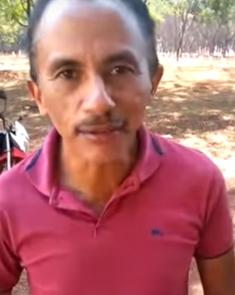

Manoel Jardim Gomes, mais conhecido como Manoel Gomes (Balsas, 2 de dezembro de 1969), é um cantor e compositor brasileiro de brega. É conhecido por criar a música "Caneta Azul", que se tornou um meme da Internet.
Manoel Gomes nasceu em Balsas e, desde a infância, se interessava pela música. O cantor chegou a afirmar, em entrevistas, que escreve músicas desde os 15 anos de idade. Ele cursou até o ensino médio e até 2019 trabalhava como vigilante.
O músico ganhou notoriedade no segundo semestre de 2019 a partir da música "Caneta Azul", de autoria do próprio Manoel. Ele escreveu a música com base numa experiência pessoal de perder frequentemente suas canetas na escola. A música se tornou um viral e recebeu interpretações de vários artistas do cenário musical, como Wesley Safadão e Simone Mendes. Manoel só registrou a canção depois do sucesso.
Após o sucesso imediato, Manoel passou a viajar pelo Brasil e se apresentando em diferentes estados. Nesta época, o cantor chegou a afirmar que pretendia gravar seu primeiro álbum, com repertório totalmente autoral. No entanto, em 2020, a fama repentina coincidiu com a pandemia de COVID-19 no Brasil. Neste cenário, o cantor ainda conseguiu se destacar com a promoção de lives. Uma delas chegou a atrair mais de 1,5 milhão de espectadores. Apesar disso, Manoel Gomes enfrentou problemas de monetização e levou um golpe de seu ex-empresário.
Em agosto de 2020, Manoel Gomes lançou Caneta Azul, seu álbum de estreia. O projeto contou com produção musical e arranjos do percussionista Laércio da Costa. Além da faixa-título, produzida em duas versões – bachata e axé –, o repertório trouxe músicas como "Maura", "Ela É Muito É Vagabunda" e "Parabéns". "Eu Vou Deixar de Ser Besta", do mesmo álbum, ganhou versão em videoclipe e rendeu cerca de 100 mil visualizações em menos de uma semana. Em 2022, "Maura" foi a segunda canção a receber uma versão audiovisual e recebeu mais de 700 mil visualizações em cerca de uma semana.
Em janeiro de 2023, lançou o single "Lá Ele" ao lado do cantor e compositor Tierry. No mês seguinte, os dois liberaram o single "Olha, se Você não Me Ama".
Com o projeto Caneta Azul, Manoel Gomes conseguiu reavivar sua popularidade em 2022, sobretudo em redes sociais como TikTok e Instagram. No mesmo ano, o músico se candidatou a deputado estadual pelo Maranhão pelo Partido Liberal. O músico recebeu 7 mil votos e não venceu as eleições, mas conseguiu uma vaga de suplente.